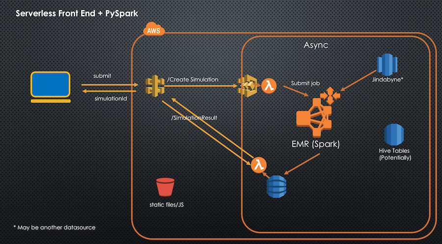

IAG AWS Serverless Workshop
For a quick recap from the last IAG Lunch N Learn, AWS defines Serverless as services with the following features to be serverless:

Serverless is associated with Lambda, but actually there are many AWS Services that are classified as serverless including but not limited to these:

This Serverless Microservices Workshop introduces the basics of serverless applications using AWS Lambda, Amazon API Gateway, AWS Step Functions, Amazon DynamoDB, Amazon Cognito, computational dispatch and machine learning via Amazon EMR (Spark) and other AWS services. We will be building a web application that provides the following features:
- a personal assistant to Answer queries from AWS Developer Forums
The web application stores static files such as html, images, css and javascript pages in S3. Updates/posts to thefrom the application invoke API Gateway requests. All dynamic content is retrieved via API Gateway and interfaces to the serverless backend. Use cases from the client that submit data for processing are routed to scalable compute processing (Amazon EMR Spark).

This lab takes the approach of starting simple and building up, and endeavours to have participants work in
- Understand Serverless concepts and feel comfortable using them
- Become familiar with how to integrate Serverless development into build pipelines
- Prepare for the IAG Hackathon in order to solve real business problems efficiently! /li>
<So let's get started>